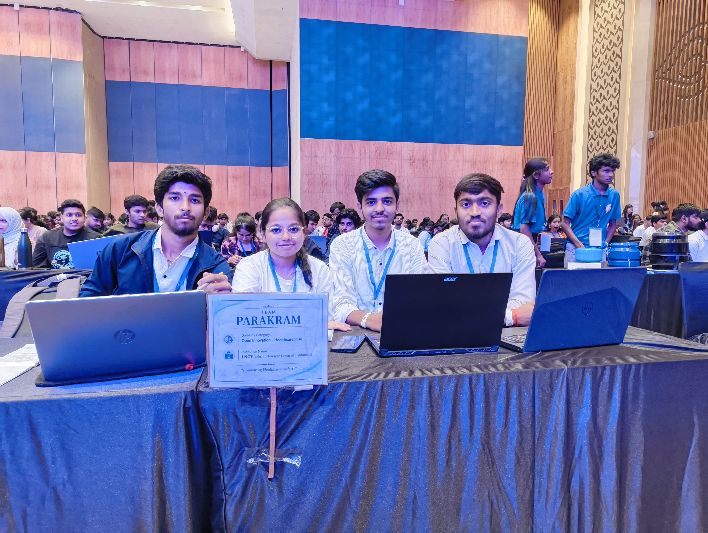
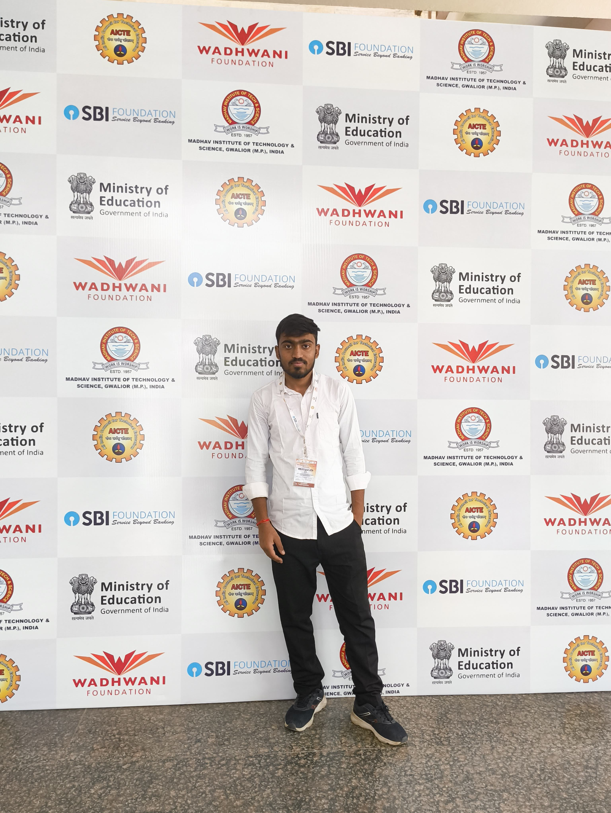
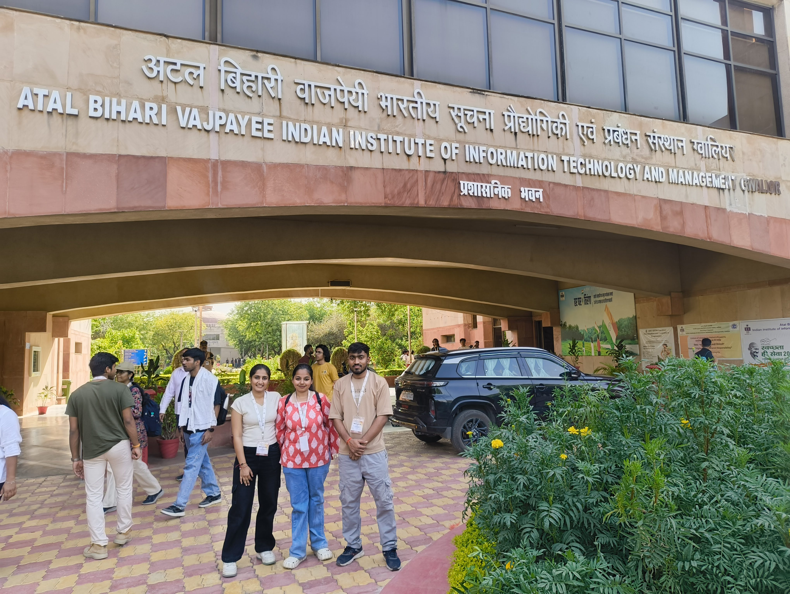
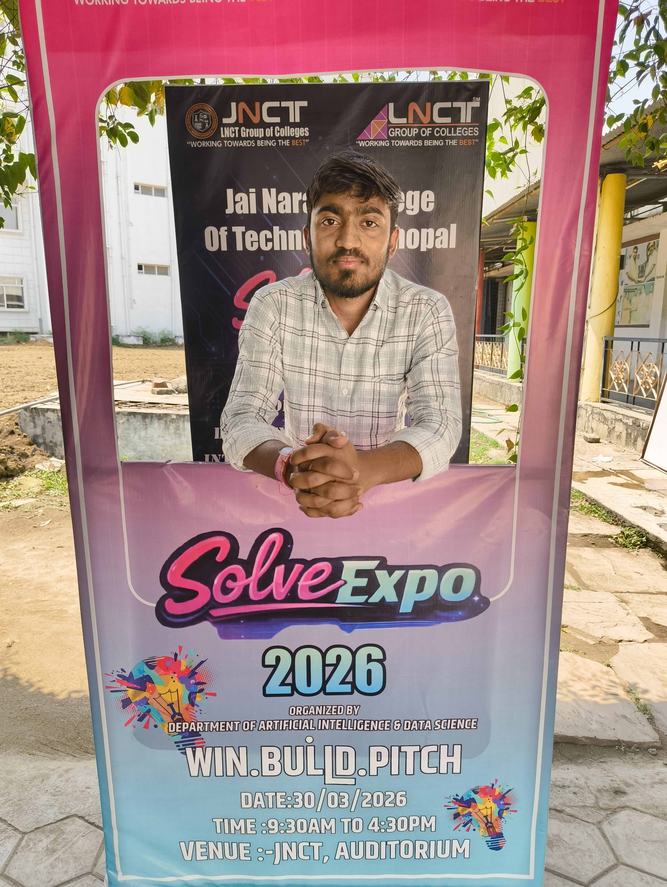
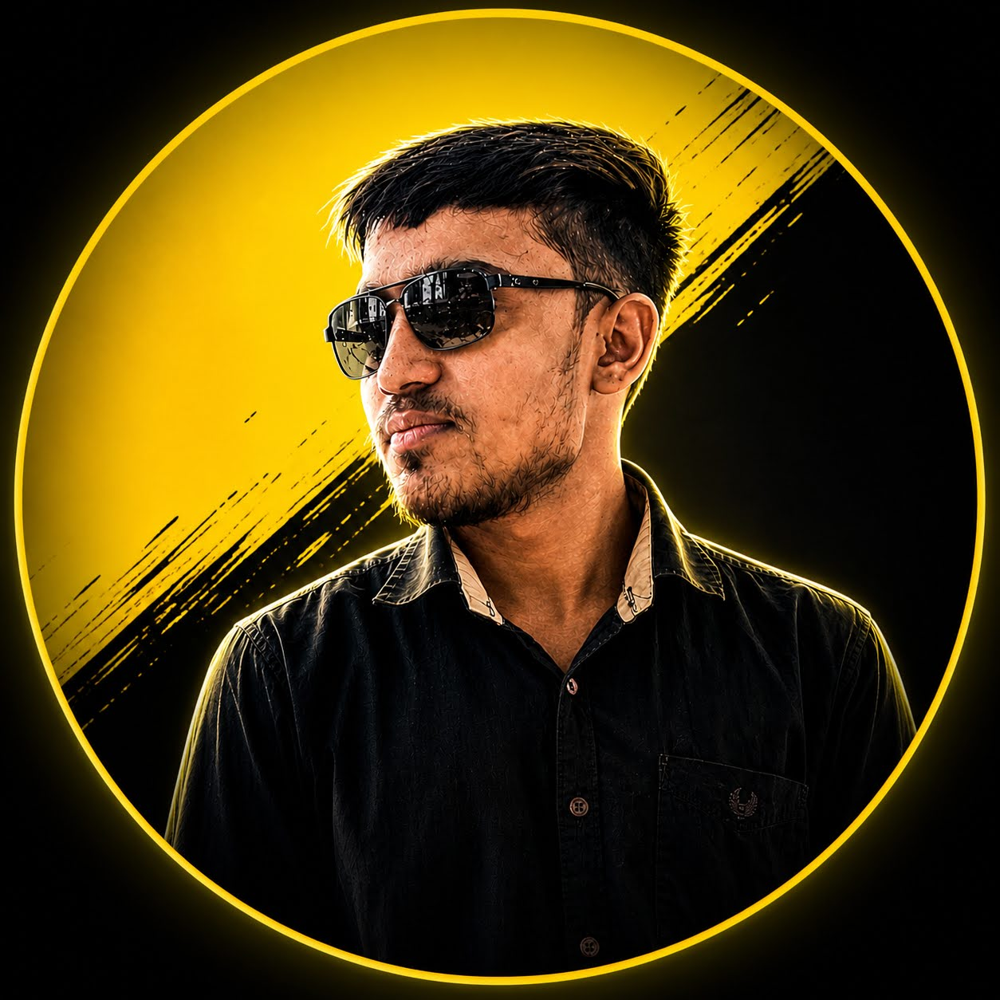

Research, Milestones & Fieldwork
Peer-reviewed technical conference research, national innovation presentations, and precision-framed photographic archive. Click any image to view in full resolution.
Peer-Reviewed Conference Research
HAI: The Trust-Centric Paradigm in Clinical AI
AI adoption in high-stakes oncology environments is heavily bottlenecked by decision fatigue and black-box opacity. This research paper formulates a trust-centric architecture prioritizing explainability, deterministic historical case retrieval, and human clinician validation over unconstrained generative models.
Core Architectural Contributions
- → Dual-Portal Decision Logic: Strict separation of high-throughput patient intake from the clinician triage dashboard.
- → Algorithmic Cohort Retrieval: Deterministic matching against 5 historical validated oncology case datasets.
- → Zero-Hallucination ICD-10 Grounding: Cross-references medical protocols to eliminate hallucinated treatment paths.
- → Live Implementation: Validated directly through the deployed HAi Pilot clinical oncology decision engine.
.jpg)
.jpg)
National Summits & Fieldwork Archive

.jpg)
.jpg)
.jpg)




Verified Engineering Milestones
Innovation, Design & Entrepreneurship (IDE) Bootcamp — Edition 3, Phase 2
April 2026 · MITS GwaliorSelected by the Ministry of Education (MoE) Innovation Cell, Wadhwani Foundation & SBI Foundation for intensive product-market fit, scalable systems architecture, and founder pitching.
India Innovates 2026 — Flagship National Innovation Stage
March 2026 · Bharat Mandapam, New DelhiSelected to present real-time computer vision and edge intelligence systems on the national stage at Bharat Mandapam, engaging with industry leaders, founders, and research directors.
ICAIEST-2026 International Conference Paper Presentation
February 2026 · Bhopal, MPPresented peer-reviewed research paper 'HAI: The Trust-Centric Paradigm in Clinical AI' proposing explainable decision mechanisms and deterministic cohort retrieval for high-stakes healthcare triage.
ABV-IIITM Gwalior Advanced Technical Systems Training
2026 · IIIT Gwalior CampusCompleted rigorous technical training covering systems architecture, algorithmic problem solving, and distributed software frameworks.